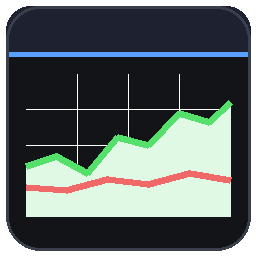

A clean, modern, interactive price-graph overlay for Hypixel SkyBlock — in-game, without the blocky Minecraft UI.
Move, freely resize, and pin as many as you like. Not tooltips — actual interactive panels.
A crosshair reveals the exact price, buy/sell, and margin at any moment in time.
Insta-buy/sell, volume, orders, margin, liquidity — or lowest BIN + 2nd/3rd, sold median, period low/high.
1d / 1w / 1mo / 6mo / 1y on a real time axis, auto-refreshing with a freshness indicator.
Drag a window short and it collapses to a clean graph-only strip with the name overlaid.
Type /graph <item> for any item — tab-complete from the full SkyBlock catalog.
mods folder.Y, or run /graph <item>.